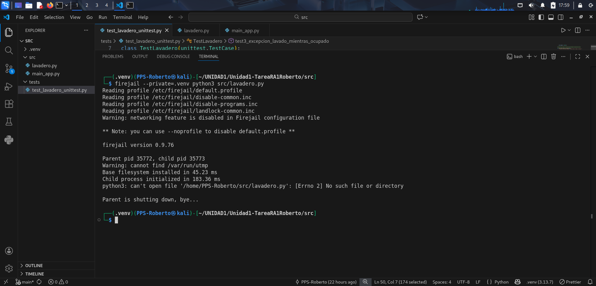

Prueba de aplicaciones en un entorno de ejecución controlado (Sandboxing)
En este apartado se describe cómo se creó un entorno de ejecución aislado para probar la aplicación lavadero.py utilizando Firejail y su interfaz gráfica Firetools.
1. Preparación del entorno sandbox
Para garantizar la seguridad y el aislamiento del sistema, se siguieron los siguientes pasos:
1.1 Instalación de Firejail y Firetools
sudo apt update
sudo apt install firejail -y
sudo apt install firetools -y
1.2 Crear un entorno virtual de Python
python3 -m venv .venv # Crear entorno virtual
source .venv/bin/activate # Activar entorno virtual
# Instalación de dependencias para lavadero.py
pip install -r requeriments.txt
pip install -e .
1.3 Ejecutar la aplicación en sandbox
Para aislar la ejecución de la aplicación:
firejail --private=.venv python3 src/lavadero.py

1.4 Ejecución de pruebas unitarias
PYTHONPATH=src python3 -m unittest tests/test_lavadero_unittest.py -v

Al ser la primera prueba, me salen todos los fallos de la aplicación